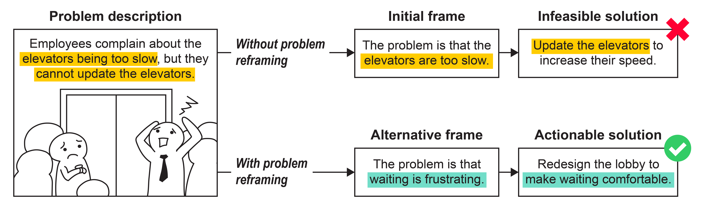
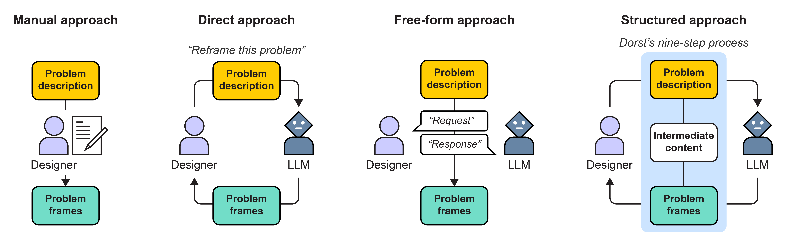

No Evidence for LLMs Being Useful in Problem Reframing

Does using LLMs benefits designers in reframing problems?

Motivation: While more and more designers use AI—especially large language models (LLMs)—in their creative activities, there is conflicting evidence on whether LLMs can help designers generate more creative ideas.
Research gap: The benefits and drawbacks of using LLMs in problem reframing are unknown. Closing this gap is critical. Otherwise, designers could be lured into using LLMs without understanding the potential negative impacts on their creative potential.
Approach: With 280 designers, we compared three conventional approaches to using LLMs (direct, free-form, and structured) in creative activities to not using LLMs (manual).
Result: We found no evidence that LLMs are useful in generating more creative problem frames. Rather, we found that using LLMs can increase the competence gap, making experienced designers generate more novel problem frames than less experienced designers.
Contribution: We contribute concrete evidence in understanding the use of LLMs in creative activities, guiding further investigation of optimistic views that LLMs help creative practitioners to be more creative.
For more details, please check out our Paper.
What are the approaches tested in this study?

In the direct approach, designers prompt LLMs to directly generate problem frames. The LLM takes problem descriptions and generates alternative frames. How the designers build on the frames depends entirely on their expertise and preference.
The free-form approach allows designers to freely converse with LLMs. Here, designers can ask LLMs to perform various tasks as needed throughout their reframing process.
Under the structured approach, the designer uses LLMs in a structured reframing process (Dorst’s nine-step process as shown below). LLMs generate intermediate content (see the white boxes in Figure 2) and alternative frames. This allows building from the LLMs’ outputs earlier on, instead of just with regard to final frames.
We provide prompts and implementation details in appendix.
Abstract
Problem reframing is a designerly activity wherein alternative perspectives are created to recast what a stated design problem is about. Generating alternative problem frames is challenging because it requires devising novel and useful perspectives that fit the given problem context. Large language models (LLMs) could assist this activity via their generative capability. However, it is not clear whether they can help designers produce high-quality frames. Therefore, we asked if there are benefits to working with LLMs. To this end, we compared three ways of using LLMs (N=280): 1) free-form, 2) direct generation, and 3) a structured approach informed by a theory of reframing. We found that using LLMs does not help improve the quality of problem frames. In fact, it increases the competence gap between experienced and inexperienced designers. Also, inexperienced ones perceived lower agency when working with LLMs. We conclude that there is no benefit to using LLMs in problem reframing and discuss possible factors for this lack of effect.